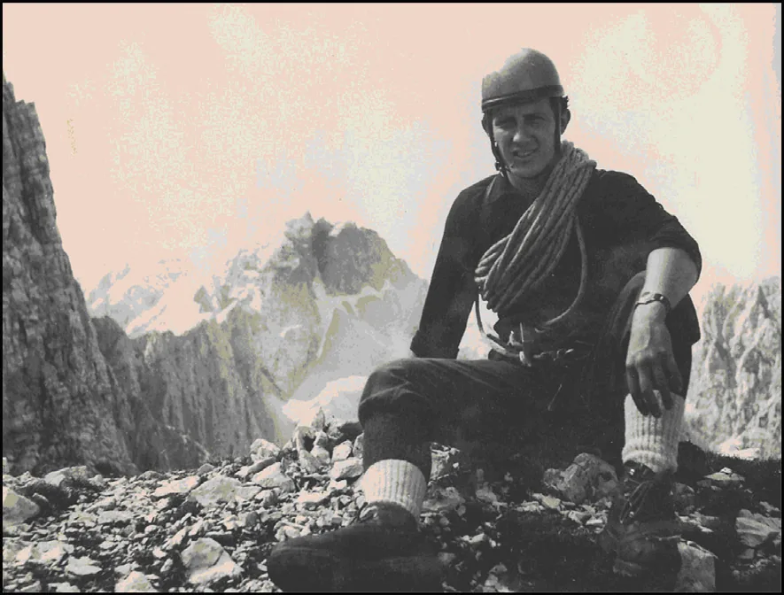

Njegov tata je imao kuburu
Puno vremena je Filac posvetio tom poslu, a zabio je samo jedan jedini klin (od njih stotinu) – za probu u kamenu stubu u Rubetićevoj. Klin smo izvadili da bi proučili deformaciju vrha, ali rupa je još i danas vidljiva.

Piše: Marijan Čepelak - Maligan Svake godine kada dođem u Zagreb obnovim puteve kroz neka mjesta i neke ulice, stube i trgove i sve što me s njima veže, a na način da ih ponovo pohodim. I prohodim, jer hodam kroz taj prostor. I prostor prolazi kroz mene – ne znam na koji način, samo ga osjećam s onim njegovim sadržajem od prije kojeg sam dio. Radi se o sjećanju – ono se može javiti bilo gdje, ali uvijek je snažnije na mjestima gdje je nastalo. I jedna od tih šetnji je ona kroz Demetrovu ulicu i Dvorjanski prečac, po Felbingerovim stubama, pa preko Tkalčićeve na Kaptol, dalje kratko kroz Zvonarničku, pa već uron u zelenilo Ribnjaka... To je bio moj povratak kući kroz dvanaest kustoskih godina u Mineraloško-petrografskom muzeju. I već onda je taj isti put budio neka druga, ranija sjećanja. Ona davna: prema Zvjezdarnici s tatom, uvijek uveče, po mraku. Mašti djeteta kakvu sam imao, već sam taj ugođaj bio je poticaj. A o škriputavim podovima Popova tornja, teleskopu (toj čudnoj spravi), što je prozorčić u daleki Svemir, objašnjenjima pojava koja su se svojom apstrakcijom pretvarala u znanstvene bajke – da i ne govorim. Ta i ona, nešto novija sjećanja. Već tada u Zvonarničkoj nije stanovao Filac, Antun Filipčić, za neke još i Tonček. A nisam mogao proći da ne bacim pogled na prozor u prizemlju s desne strane ulaza u zgradu. Na njemu se ranije mogla vidjeti njegova mama. Tata je bio češće u radionici na Kaptolu, u niskoj kući na početku Opatičke (ulaz iz dvorišta). Radionici koju je naslijedio Filac i u kojoj smo napravili stotinjak takozvanih bor-klinova. Nema više te radionice, a od neki dan više ni Filca. Samo sjećanja u kojima sve živi pritajenim načinom. A to je bio zaista pothvat! I ranije su se izrađivala slična pomagala penjačke tehnike tog vremena, možda još i sada stoji u ploči Velebitaškog smjera u Anića kuku jedan 12-milimetarski. Ali ovih je bilo toliko, da su služili godinama na puno mjesta u našim prvenstvenim smjerovima, pa čak i nekim jamama. U Bridu Klina ostalo ih je jedanaest, u Ponoru na Bunjevcu spuštali smo se niz najveću vertikalu sa sidrišta gdje je bio zabijen ekspanzivac upravo iz te serije. I još uvijek nam služe, jer nisu svi potrošeni. Bušili smo plitku rupu u komade šipke vučenog čelika, rundajzna od 8 milimetara promjera. Na to su zavarene ušice izrezane iz karika lanca. Puno vremena je Filac posvetio tom poslu, a zabio je samo jedan jedini klin (od njih stotinu) – za probu u kamenu stubu u Rubetićevoj. Klin smo izvadili da bi proučili deformaciju vrha, ali rupa je još i danas vidljiva.
[caption id="attachment_967" align="alignnone" width="885"] Antun Filipčić - Filac[/caption]O tome razmišljam sada i otkrivam njegovo prisustvo na puno finih načina. Sjećam se plovidbe Savom, od Savskog mosta do Podsuseda i natrag. Bilo je to isprobavanje motora moga brata – posebnog motora za kajak. Filac ga je isprobao na drvenom kanuu koji je imao u Veslačkom klubu (čiji je bio član). Ne sjećam se zašto sam ja bio tome prisutan, ali drago mi je imati sjećanje na taj zaista poseban događaj. Sjećam se i njegovog sviranja gitare. Nije bio nikakav virtuoz, ali znao je dovoljno za velebitaške potrebe, k tome još i puno pjesama koje su u ono vrijeme bile neizostavne u društvenim zbivanjima. Među njima i razne slovenske, koje čak i kada su obične narodne, zvuče kao planinarske – mnoge smo zadržali do danas, neke smo zaboravili. Jedna od tih koja se ne izvodi je ona "Oj, ta vojaški boben". Uvijek kada se sjetim te pjesme, vidim sliku Filca kako svira gitaru i pjeva:
Oj, ta zelena trata, ta bo meni zadnji dom. Oj, tukaj bom počival, kadar jaz umrl bom.
A volio je posebnosti, pa tako i u pjesmi. Jedino njega sam čuo pjevati neku, vjerojatno staru božićnu pjesmu od koje se prisjećam samo ovog stiha: S jednom nogom zipku ziblje / Božjeg sinka Jezuša. Slika je to stvarnosti ruralnog života, zaposlene domaćice koja obavlja više poslova istovremeno, nešto sasvim razumljivo i blisko. Još ima jedna poveznica Filca s prošlim, davnim vremenima - njegova sposobnost pričanja. Imao je prirodni dar prenošenja događaja kroz priču, pretvarajući obično u neobično, potičući maštu do granice nemogućeg, pa i preko nje. Njegov način, smireni ton i izraz lica obuzimali su slušatelje. Njegovo nije bilo pisani, nego govorni jezik. To je teško opisati, još teže ponoviti. Samo ću spomenuti jednu, za one koji ju znaju da se podsjete.
Radilo se tu o nekom preseljavanju u kojem su sudjelovali prijatelji, familija, poznanici – kako je to već bio običaj u ono vrijeme. I sam sam sudjelovao u više takvih događaja, prenošenja nezgrapnih i teških predmeta kroz uvijek preusko stubište, vožnji gradom na kamionu krcatom namještajem... Zato si mogu lako zamisliti sliku događaja koju opisuje Filac: Teški hrastov ormar s mukom unesen u stan na katu, smještanje istog uza zid u nepristupačnom dijelu tamne sobe. Puno ruku, ljudi, neki se međusobno poznaju, neki ne. I tako ostaje nezapaženo da je po završetku posla jedan manje. Uz pivo i gemišt priča se o drugim stvarima, ljudi se razilaze... Više godina kasnije, u nekom novom premještanju i selidbi, taj teški ormar biva odmaknut od zida. A iza njega, u uspravnom položaju – dobro spljošteni kostur.
Pa i neki istiniti događaji iz Filčevog raznolikog života izgledaju kao izmišljene priče. To kako se vraćao nakon par godina u Africi, preko Beča u Zagreb. S poklonom za djecu – s malim majmunom. Imao je sve potrebne isprave za izvoz životinje, ali ne i uvoz u Austriju. Jer, nastavak puta nije bio avionom, već autom prijatelja koji su ga čekali u Beču. I tako je nastao teško rješiv problem. Prije svega za carinske službenike, jer Filac je bio spreman prepustiti majmuna bečkom zoološkom vrtu. To međutim nije rješavalo bit problema: nedostatak dozvole uvoza. I konačno, pragmatičnost je prevladala. Nakon puno sati u bescarinskoj zoni zračne luke, dobio je izuzetnu dozvolu da u nekom kratkom roku prođe s majmunom austrijskim tlom do granice sa Slovenijom. Carinici na tom prijelazu su već bili obaviješteni. Oni austrijski, ne i slovenski. No, kad je Slovencima prijavio svoju prtljagu, samo su se nasmijali i rekli: "Nema problema, u ovoj zemlji već ima toliko majmuna da jedan više ne znači ništa. Slobodno ga uvezite".
Naravno da je taj majmun bio atrakcija u "Velebitu". Volio je oponašati ljude i to je činio vrlo uvjerljivo. Ponekad čak s teatarski naglašenim pokretima i izrazom lica. Dali bi mu neupaljenu cigaretu, a on je glumio pušača i sa izrazom beskrajnog zadovoljstva uvlačio i otpuhivao nepostojeći dim. Zbog svoje pretjerano nemirne i žive prirode, na kraju je predan zoološkom vrtu u Maksimiru. Igre dječaka Filčeve generacije, pa i kasnije, bile su grupne. I kao svi dječaci, i oni su se nastojali istaknuti unutar svoje klape, pobjeđivati u zajedničkim igrama, biti glavni u raznim podvizima, ili zasjeniti druge u verbalnom nadmetanju. Bez pravila i ograničenja, čak su pretjerivanje i laž ponekad bili prihvaćeni kao oblik takvog natjecanja. Naravno, međusobno su se dobro poznavali, tu se teško moglo nešto podvaliti, pa se pribjegavalo trećim (zaštitničkim) osobama s kojima su bili u zajedništvu. Primjerice: moj bratić ima novu vespu, moj tata je bio u Americi, moja mama govori tri jezika, moj brat igra u nogometnom klubu, moja teta radi u banci... Verbalni protivnici nisu nastojali opovrći tvrdnje suparnika, nego iznijeti nešto još moćnije i uvjerljivije. A Filac je čuvao za kraj argument iza kojeg bi svi doslovno ostali otvorenih usta i bez riječi, a on završavao kao pobjednik: a moj tata ima kuburu!
Ma kakva vespa, banka, znanje stranih jezika! Riječ "kubura" je u sebi sažimala snagu, nepoznatu moć, tajanstvenost, opasnost, daleka vremena, priče o gusarima i hajducima... Njegov tata je imao taj predmet vrijedan poštovanja i zavisti. Tako se Filac izdizao iz prosjeka u toj životnoj dobi. A kasnije vlastitom snagom, voljom, sposobnostima i nadarenošću, ljubavi za planine i prirodu općenito, za svoju domovinu Hrvatsku, za ljude kojima je bio okružen, s kojima je dijelio teškoće i radosti života.
Ovaj zapis nije pokušaj opisivanja njegovih postignuća i vrlina – samo je skica ovim trenutkom zahvaćenog sjećanja.
U nastavku su neke fotografije Antuna Filipčića – Filca, neke vrlo oskudnih, ili nikakvih podataka o autoru, mjestu i datumu snimanja. Ako netko zna više, neka mi javi, (op.a.).
[gallery type="rectangular" ids="967,968,969,970,971,972"]